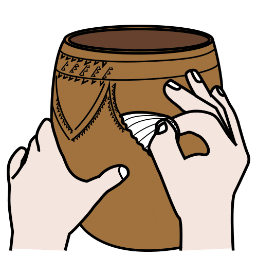
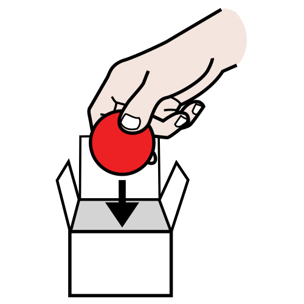
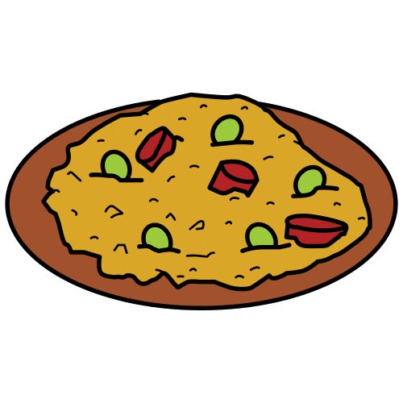
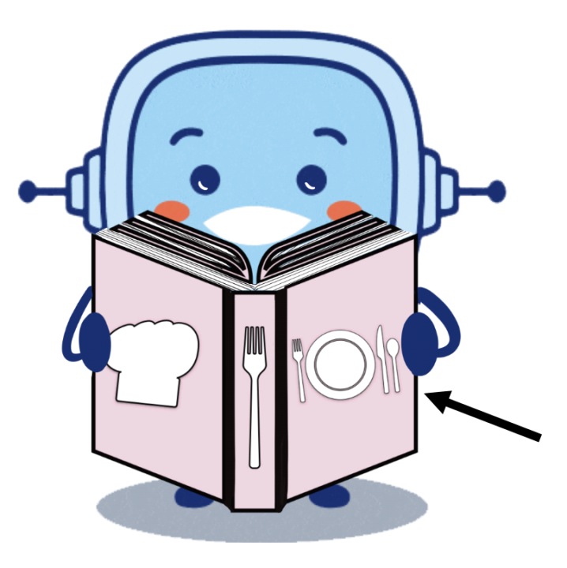
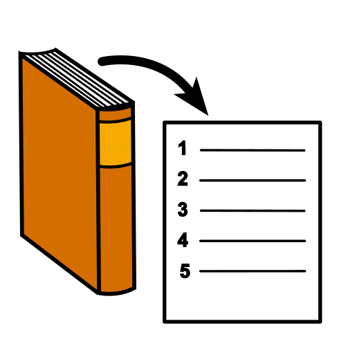
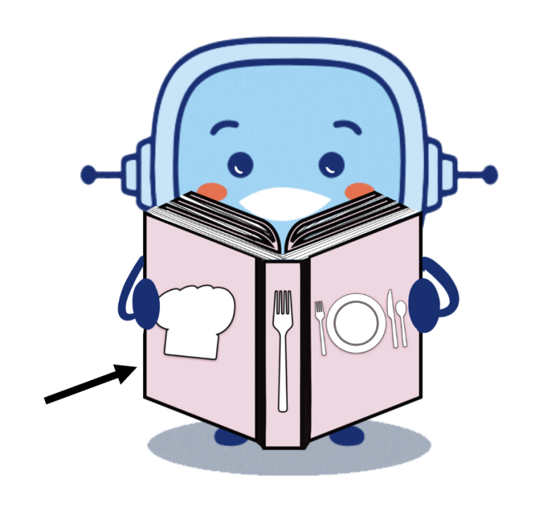

Juan consultó el manual de instrucciones de la televisión.
Decorar

Definición:
Adornar algo con dibujos, formas o objetos.
Ejemplo:
La niña decoró su cuento con un dibujo.
Detalle
Definición:
Parte o fragmento de algo.
Ejemplo:
Mi padre puso muchos detalles en mi tarta.
Incluir

Definición:
Poner una cosa en el interior de otra.
Ejemplo:
Deberíamos incluir a alguien nuevo en el equipo.
Original
Definición:
Obra producida directamente por su autor. Que no es copia o imitación de otra y se distingue por su novedad.
Ejemplo:
Pedro ha hecho un dibujo original.
Superar
Definición:
Lograr pasar las dificultades.
Ejemplo:
Juani consiguió superar el examen de lengua.
Vigilar
Definición:
Observar atentamente a una persona o cosa, para evitar que sufra o cause algún daño o peligro.
Ejemplo:
Vigila el guiso para que no se queme.
Ya conocéis qué es una receta de cocina y cómo se hace. Además habéis visto que no todas las recetas son saludables, es importante vigilar los ingredientes que llevan…
¡Todo esto os va a hacer falta para superar el reto final! Pero no es suficiente. Si váis a hacer un libro entre toda la clase con las recetas que elaboréis, tenéis que conocer que ese libro se llama RECETARIO.
Definición:
Observar atentamente a una persona o cosa, para evitar que sufra o cause algún daño o peligro.
Vais a hacer un libro entre todos con vuestras recetas.
Ese libro de recetas se llama RECETARIO.
Definición:
Observar atentamente a una persona o cosa, para evitar que sufra o cause algún daño o peligro.
Ejemplo:
Vigila el guiso para que no se queme.
Definición:
Lograr pasar las dificultades.
Ejemplo:
Juani consiguió superar el examen de lengua.
Audio
1. Recetario saludable
¿Qué es un recetario de cocina?
Un recetario es un libro que sirve para consultar recetas de cocina con instrucciones claras para que cualquier persona pueda aprender a elaborarlas.
Además de estas instrucciones, los recetarios suelen incluir fotografías de los platos terminados. A veces, también se añaden imágenes de los ingredientes y de los pasos de elaboración.
Partes de un recetario de cocina.
Para saber cómo hacer un recetario de cocina debes conocer cuáles son las partes que debe tener:
Portada: es la primera página del recetario. En ella aparece el título del recetario y las personas que han elaborado las recetas que hay en su interior. Se suele decorar con alguna imagen de las que aparecen en el interior o con dibujos o imágenes originales.
Índice: aparecen ordenadas todas las recetas que vamos a encontrar en el recetario. Se pueden ordenar por orden alfabético, por alimentos, según el tipo de platos (desayuno, primer plato, segundo plato, postre…).
Recetas: son las instrucciones para elaborar cada uno de los platos que contiene el recetario. Se suele acompañar de una imagen del plato elaborado.
Contraportada: es un pequeño texto que explica de forma breve algunos detalles sobre las recetas que contiene el recetario. Su función es animar a leerlo a las personas que se acerquen a él.
Definición:
Buscar información o datos sobre algún tema.
Ejemplo:
Juan consultó el manual de instrucciones de la televisión.
Definición:
Poner una cosa en el interior de otra.
Ejemplo:
Deberíamos incluir a alguien nuevo en el equipo.
Definición:
Adornar algo con dibujos, formas o objetos.
Ejemplo:
La niña decoró su cuento con un dibujo.
Definición:
Obra producida directamente por su autor. Que no es copia o imitación de otra y se distingue por su novedad.
Ejemplo:
Pedro ha hecho un dibujo original.
Definición:
Parte o fragmento de algo.
Ejemplo:
Mi padre puso muchos detalles en mi tarta.
Lectura facilitada
¿Qué es un recetario de cocina?
Es un libro que recoge recetas de cocina.
En el libro vienen instrucciones claras para hacer cada receta.

Los recetarios pueden tener fotografías de los platos terminados.
Los recetarios también pueden llevar imágenes de los ingredientes y de su elaboración.
Partes de un recetario de cocina.
Un recetario contiene las siguientes partes:

Portada: Es la primera página del recetario. En la portada aparece el título del recetario y los autores de las recetas. La portada puede tener una imagen de alguna receta que incluya o de los ingredientes

Índice: El índice permite ordenar todas las recetas del recetario. Las recetas se pueden ordenar de distintas formas:
Se pueden ordenar por orden alfabético.
Se pueden ordenar por tipo de alimentos.
Se pueden ordenar según el momento del día en que comamos esa receta (desayuno, primer plato, segundo plato, postre…)
Recetas: Las recetas son las instrucciones para elaborar cada uno de los platos del recetario. Puede aparecer con una imagen del plato elaborado.

Contraportada: La contraportada es un texto corto que explica detalles sobre el recetario. Sirve para animar a leerlo a las personas que lo vean.
Definición:
Parte de algo que no es la parte más importante, pero es una parte que vemos.
Ejemplo:
Mi padre puso muchos detalles en mi tarta.
Audio
2. Ahora ponlo en práctica
Es el turno del ejercicio individual de este bloque. Ahora que ya sabes qué es un recetario y cuáles son sus partes, vamos a practicar.
Elige la opción con la que te sientas más cómoda o cómodo. ¡Ánimo!
Opción A: Partes del recetario
Rétor quiere enseñarle a su ayudante las partes de un recetario de cocina. ¿Le ayudas?
Elige la definición que corresponde a cada parte.
Opción B: ¡Demuestra lo que sabes!
Ayuda al ayudante de Rétor a pasar esta prueba para conseguir llegar a ser un buen cocinero. Contesta si son verdaderas o falsas las siguientes frases sobre el recetario.
Retroalimentación
Verdadero
Retroalimentación
Verdadero
Retroalimentación
Falso
Retroalimentación
Verdadero
Retroalimentación
Falso
Opción C: Partes desordenadas
¡Qué locura! Las partes de este recetario están totalmente desordenadas. ¿Eres capaz de ordenarlas?
Ordena las partes del recetario.
Opción D: Portada saludable
Rétor ha encontrado un recetario con platos muy saludables, pero no tiene portada. ¿Puedes hacerle una portada?